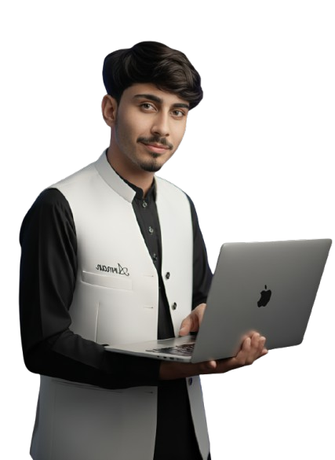

1. I'm Arman Nawaz, a passionate Full-Stack Developer and Android Developer from Pakistan.
2. I specialize in building scalable web applications, mobile apps, and complete digital solutions.
3. I have 2+ years of experience in software development and creative digital arts.
4. My expertise includes Kotlin, Jetpack Compose, Node.js, React, Django, and PostgreSQL.
5. I build native Android apps using modern architecture like MVVM and Clean Architecture.
6. I create responsive, high-performance websites with HTML, CSS, JavaScript, and React.
7. I develop robust backends using Node.js, Express, Django, and RESTful APIs.
8. I work with both SQL (PostgreSQL) and NoSQL (MongoDB) databases.
9. I integrate real-time features using Socket.IO for chat and live tracking.
10. I implement push notifications using Firebase Cloud Messaging (FCM).
11. I use Retrofit for networking in Android apps.
12. I handle authentication with JWT and bcrypt for security.
13. I build service marketplace platforms like "Work In" — my flagship project.
14. I also specialize in AI content creation — generating videos and images using AI tools.
15. I create professional logos, product posters, and brand identities.
16. I manage YouTube channels — content strategy, thumbnails, and audience growth.
17. I work as a freelancer on Fiverr, delivering elite-level services to clients worldwide.
18. I believe in clean code, best practices, and continuous learning.
19. I am a problem solver who loves turning ideas into reality.
20. I have built 5+ complete projects from scratch, including web and mobile apps.
21. Full-Stack Websites — from landing pages to complex web apps.
22. Native Android Apps — with modern UI/UX using Jetpack Compose.
23. REST APIs — secure, fast, and scalable backends.
24. Real-time Chat Applications — with Socket.IO integration.
25. Live Tracking Systems — for workers, deliveries, and more.
26. Payment Gateways — JazzCash, EasyPaisa, and card payments.
27. Admin Dashboards — with charts, analytics, and reports.
28. OTP Verification Systems — using Resend, Gmail SMTP, or custom email.
29. Push Notification Systems — using FCM for real-time alerts.
30. Social Media Content — AI-generated videos, images, and thumbnails.
31. Brand Identity — logos, posters, and complete brand packages.
32. YouTube Strategy — channel management, growth hacks, and content planning.
33. Frontend: HTML, CSS, JavaScript, React.js, Bootstrap.
34. Backend: Node.js, Express.js, Django, REST APIs.
35. Mobile: Kotlin, Jetpack Compose, Android SDK.
36. Database: PostgreSQL, MongoDB, MySQL, Room.
37. Tools: Git, GitHub, VS Code, Android Studio, Figma.
38. Cloud: Firebase, Cloudflare, VPS (Hetzner, DigitalOcean).
39. Real-time: Socket.IO, WebSockets.
40. Payment: JazzCash, EasyPaisa, Stripe (basic).
41. BSCS (Bachelor of Science in Computer Science) — Ongoing.
42. Self-taught developer with hands-on project experience.
43. Active learner — always exploring new technologies.
44. Fluent in English, Urdu, and Balochi.
45. I deliver high-quality work on time.
46. I communicate clearly and professionally.
47. I understand both code and design — a complete package.
48. I am reliable, dedicated, and passionate about what I do.
49. I have experience working with international clients.
50. I am here to help you build something extraordinary.